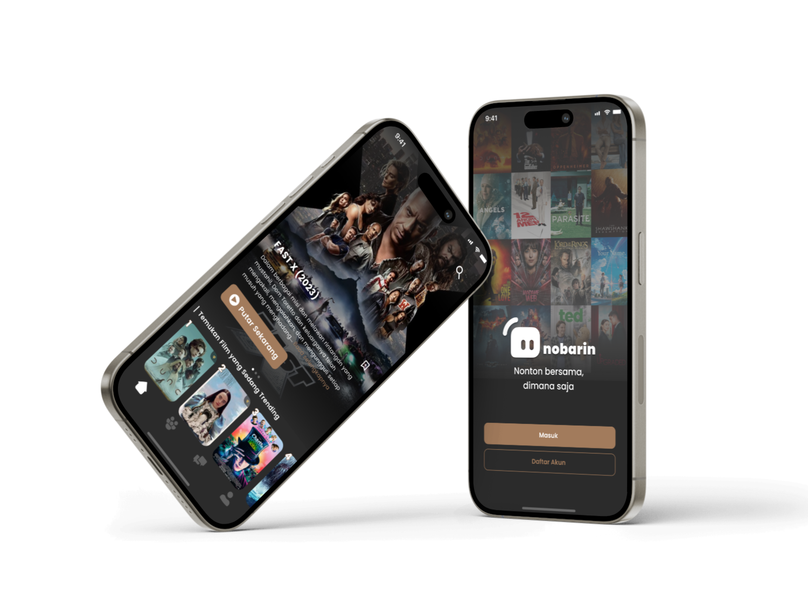
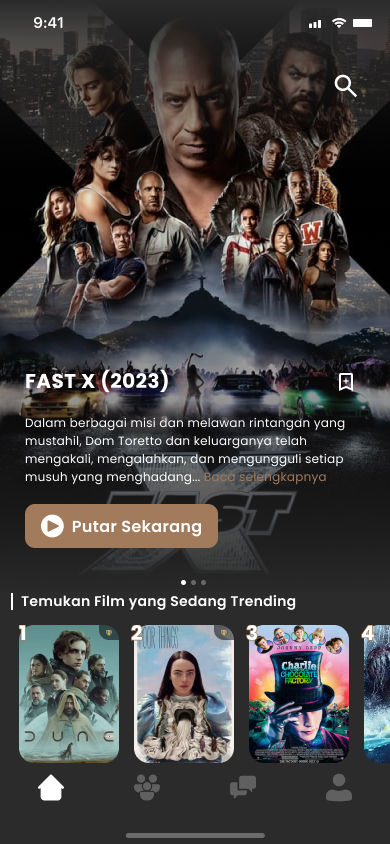
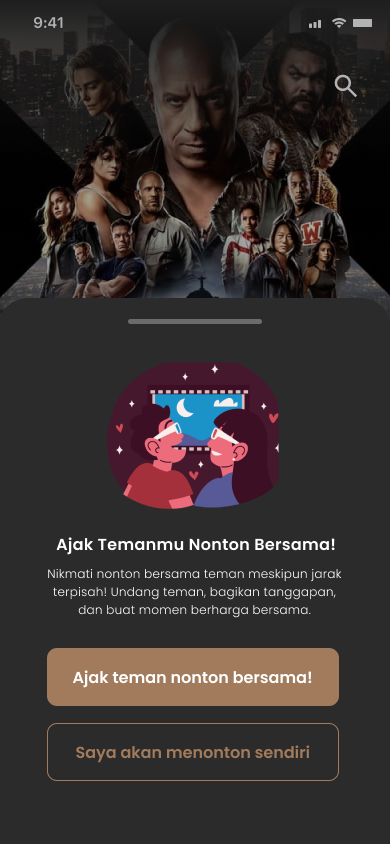
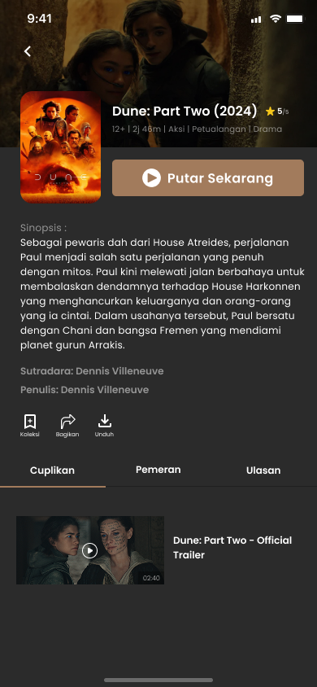
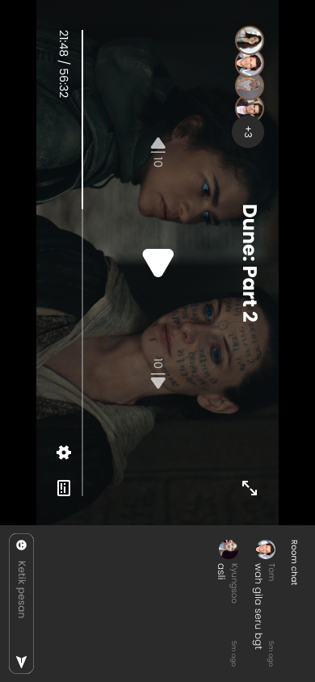
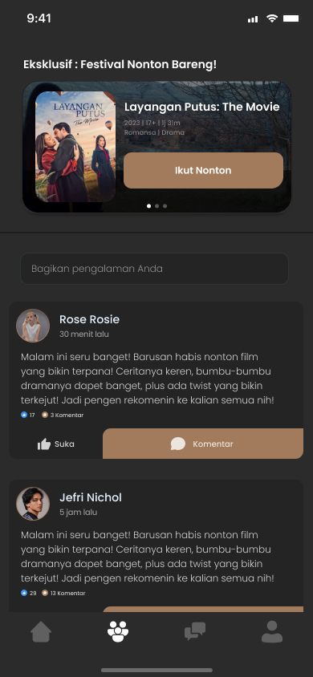
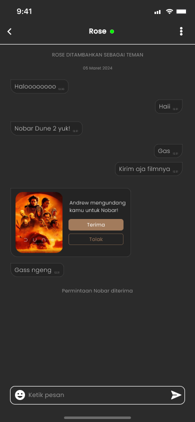
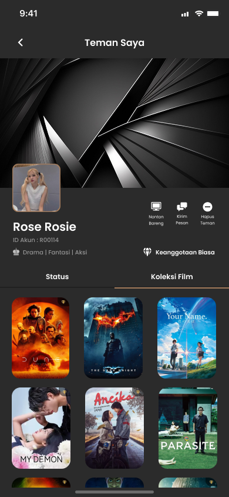
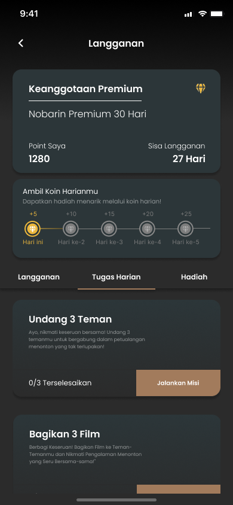

Nobarin
VOD app where you can watch movies together with friends in real time.
- Role
- UI/UX Designer
- Timeline
- April 2024
- Stack
- Figma · Canva
- Outcome
- 2nd place, MUC 2024

About the project
Nobarin is a video-on-demand app that lets users watch movies and series anytime and anywhere. What makes it different is the watch-together feature. Users can invite a friend to the same movie, and the film plays for both of them in real time with a chat inside the player. Besides watching, users can browse films by category, save or download them, write reviews, and share experiences in a community forum. Nobarin also has a subscription with daily tasks and points that can be exchanged for vouchers.
The challenge
The main challenge was making the watch-together experience work well on a phone. The video, the chat, and the controls all had to fit on a small screen, especially in landscape, without making the movie hard to enjoy. We also had a lot of features to bring together in one app: streaming, friends, messaging, a community, and a subscription. The goal was to keep every flow easy to follow, so that users do not feel overwhelmed.
How we worked
- Defined the concept. Developed the idea for a video-on-demand app that makes it easy for people to watch movies together, even when they are far apart.
- Planned the key features. Outlined features including movie browsing and search, watch parties, community, messaging, and subscriptions.
- Mapped the user flows. Defined the user journeys for onboarding, home, movie details and video player, community, profile, friends, chat, and settings before designing the screens.
- Created low-fidelity wireframes. Sketched the initial layouts to establish the screen structure and content hierarchy.
- Designed the UI and prototype. Turned the wireframes into high-fidelity screens and created a clickable prototype in Figma to test the end-to-end user flows.
What we designed
- Homepage: A slide banner shows trending films with a Play Now button and a save icon. Below it, films are grouped into categories like Trending, New Releases, Indonesian Films, and etc. Users can also search by genre or by popular titles.
- Watch Options: Lets users watch films alone or invite friends to watch together.
- Film Details: Provides film information, trailers, cast and crew details, ratings, and options to play, share, save, download, or review films.
- Watch Together: Enables real-time group viewing with in-player chat.
- Community: Allows users to share film-related posts, like and comment on discussions, and discover community events.
- Message: Supports private messaging and watch invitations.
- Friends: Displays friends’ profiles, status, and movie collections, with options to send messages or invite friends to watch.
- Subscriptions: Shows membership details, remaining subscription time, and points. Users can also collect daily points, complete tasks, and redeem vouchers.








Outcome
Nobarin won 2nd place at MUC 2024 (Mobile UI/UX Competition), a national competition held by Universitas Atma Jaya Yogyakarta, where we competed against 122 teams from 13 provinces.
Explore the interactive prototype here ↗, and read the full project proposal ↗.
What's next
Let’s work together.
I’m open to UI/UX design roles and collaborations. Let’s talk about how I can contribute.